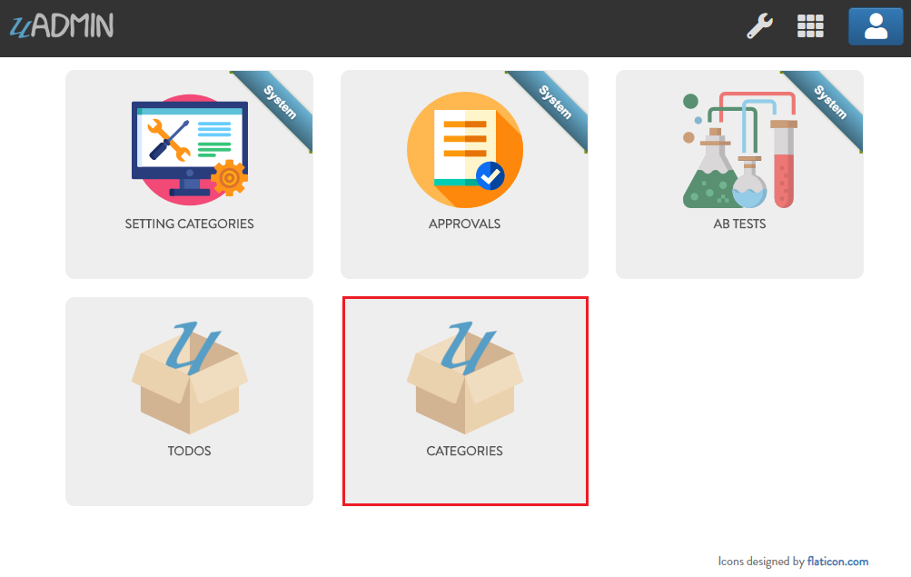
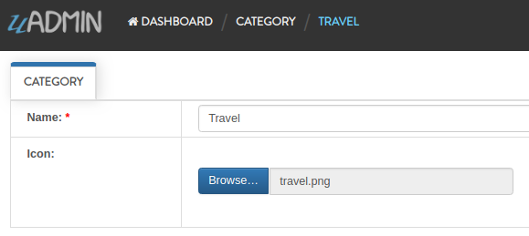

uAdmin Tutorial Part 3 - Image Cropping¶
In this tutorial, we will talk about cropping an image on the image type tag field in the model.
Create a file named category.go inside the models folder with the following codes below:
package models
import (
"github.com/uadmin/uadmin"
)
// Category Model !
type Category struct {
uadmin.Model
Name string `uadmin:"required"`
Icon string `uadmin:"image"`
}
Now register the model on main.go where models is the package name and Category is the model name:
func main() {
uadmin.Register(
models.Todo{},
models.Category{}, // <-- place it here
)
uadmin.StartServer()
}
Run your application. As expected, the category model is added in the uAdmin Dashboard.
Let’s create a new record in the category model (e.g. Travel).
As you can see, the Name field is required indicated by the * symbol. Required field cannot be an empty string. In the Icon field, you can browse an image file in .png, .jpg, .jpeg, or .gif in your computer. Save your record to see the result.
uAdmin allows you to crop your images. In order to do that, click the icon in the list highlighted below.

Click the crop icon on the top left corner.


Once you are done, click the Crop button below and refresh the webpage to save your progress.

Congrats, now you know how to create an image type field and crop an uploaded image inside the model.
Click here to view our progress so far.
In the next part we will discuss about linking models using a foreign key.